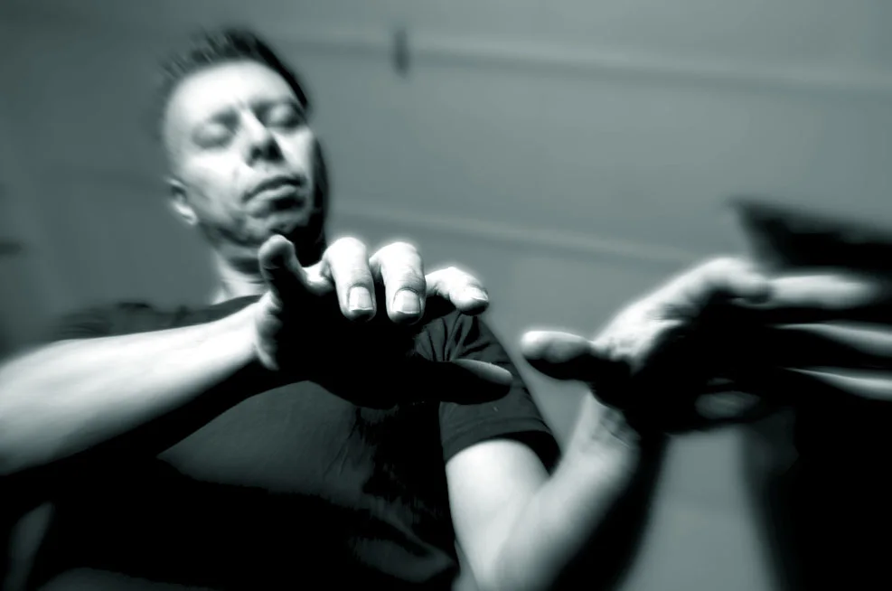
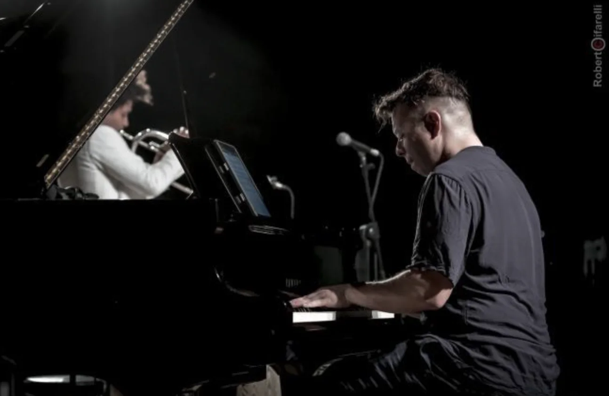
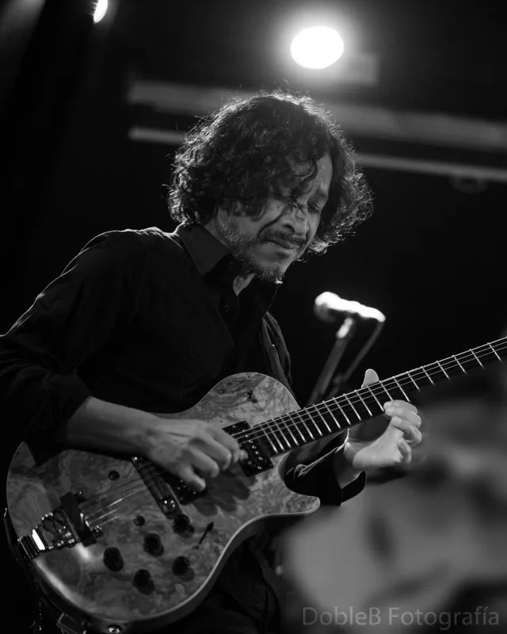
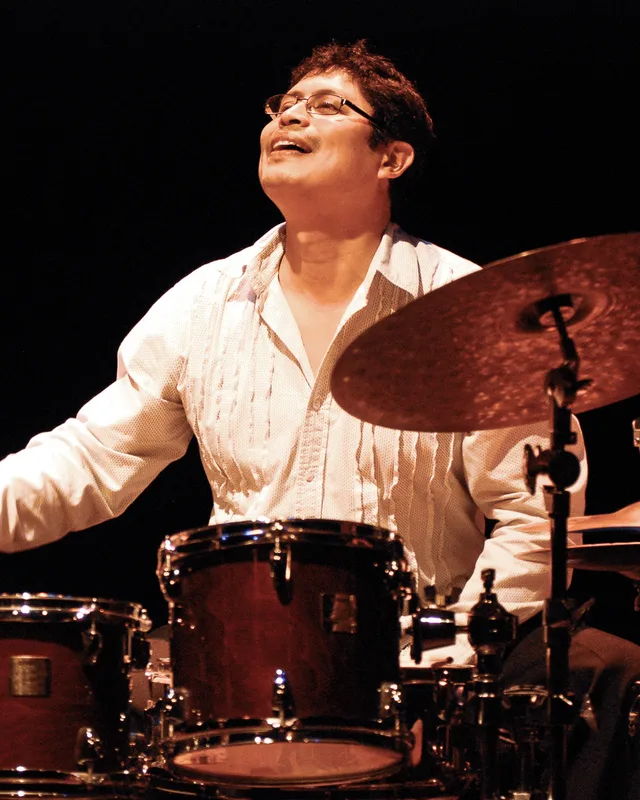
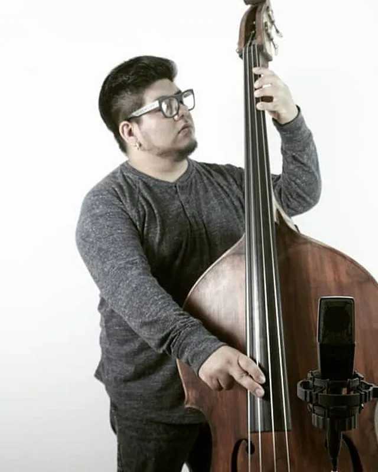

El concierto
Un pianista de Barcelona, un trío de Lima
El pianista, compositor y productor mexicano Mark Aanderud llega desde Barcelona para cerrar el año en Cocodrilo Verde.
Con más de 50 álbumes y colaboraciones con The Mars Volta, Natalia Lafourcade o Margareth Menezes, Aanderud es una de las figuras más destacadas de la música mexicana contemporánea. En esta noche comparte escenario con el guitarrista peruano Andrés Prado y su trío: jazz contemporáneo, música popular latinoamericana y la improvisación como punto de encuentro.

- Fecha
- Sábado 5 de diciembre de 2026
- Hora
- 8:00 a 10:00 p. m. · Primer turno
- Lugar
- Cocodrilo Verde, Miraflores
Quién es

Mark Aanderud
Piano · Composición · Producción
Pianista, tecladista, compositor y productor radicado en Barcelona, es uno de los músicos mexicanos más sobresalientes de los últimos años. Tras años en Nueva York, Washington, Berlín y Praga, su obra transita con fluidez entre la música clásica, el jazz, la electrónica y los ritmos del mundo.
Ha impulsado proyectos como Mole y Grupo Quebrante, y ha colaborado con The Mars Volta, Natalia Lafourcade, Wynton Marsalis, David Gilmore, Margareth Menezes, Vanessa Moreno, Stomu Takeishi y Tim Berne, entre muchos otros. Forma parte del Sistema Nacional de Creadores de Arte de México y es director musical y artístico de The House of Beautiful Business, donde diseña experiencias sonoras e inmersivas en escenarios de todo el mundo.
- +50álbumes como líder y colaborador
- +600obras publicadas: cámara, multimedia, jazz y piano solo
Fuente: biografía oficial del artista (markaanderud.com).
Antes del concierto
Escúchalos
En escena
Con Andrés Prado Trío
-

Foto: DobleB Fotografía Andrés Prado Guitarra
Guitarrista, compositor y educador peruano. Tiene 11 álbumes como solista —el más reciente, Barranquino— y ha integrado PeruJazz, Shamánico y Mississippi, junto a músicos como Abraham Laboriel, Alex Acuña, Anthony Cox y Jean Pierre Magnet. Fue docente en el Trinity College of Music, la Brunel University y el Blackheath Conservatoire de Londres, y en el McNally Smith College of Music (EE. UU.). Cofundó la Escuela de Música de la PUCP y ha representado al Perú en festivales internacionales de jazz.
-

Hugo Alcázar Batería
Baterista, percusionista, compositor, educador y musicólogo peruano, reconocido por llevar los ritmos e instrumentos afroperuanos —cajón, cajita, quijada— a la batería y al jazz. Grabó en Aurea de Geoffrey Keezer, álbum nominado al Grammy, y ha tocado con Gabriel Alegría y su Sexteto Afroperuano, Eva Ayllón, Tony Succar y Renata Flores, entre otros. Es magíster en Musicología por la PUCP y artista Vic Firth.
-

Mario Cuba Bajo
Bajista y contrabajista peruano de jazz y música latina. Este año tocó en el Lima Jazz Fest 2026 con Defensores del Morro, el proyecto afroperuano del saxofonista Julio Flavio Maza, y ha compartido escenario con músicos como Stu Mindeman y Juan Daniel Pastor. También lidera sus propios formatos de latin jazz y salsa.
Entradas
Reserva tu lugar
-
Escríbenos por WhatsApp
Dinos cuántas personas son y si alguna entra con tarifa de estudiante.
-
Te confirmamos
Te respondemos con la disponibilidad y la forma de pago para asegurar tu reserva.
-
Llega a tiempo
El concierto es en el primer turno, de 8:00 a 10:00 p. m.
o escribe al 983 545 543
Antes de ir
Cómo llegar
Sábado 5 de diciembre
- 8:00 p. m. Inicio del concierto (primer turno)
- 10:00 p. m. Cierre
Entrada S/ 50 · Estudiantes S/ 40 con carné.